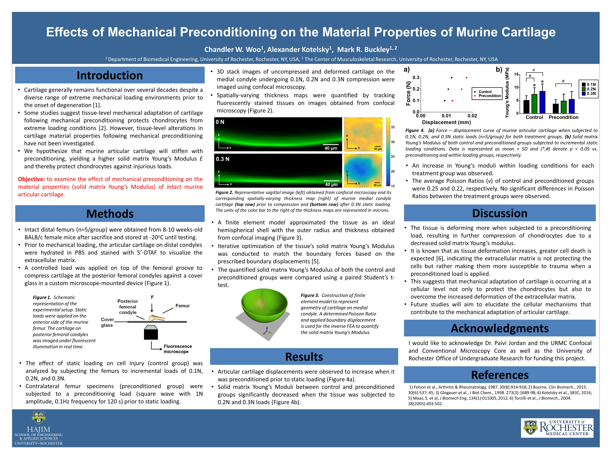

This study focuses on the effects of preconditioning to determine whether tissue-level mechanical adaptation occurs in articular cartilage. A series of confocal imaging and analysis using MATLAB, ImageJ and FEBio yielded values of the solid matrix Young's Modulus (E) and drained Poisson Ratio (v) at preconditioned and controlled specimens. Results demonstrated that tissue deforms more when subjected to a preconditioned load, suggesting that mechanical adaptation occurs at a cellular level to protect the chondrocytes, or cartilage cells.
This was my first experience to present my research that I had worked on for the past year. Not only was it incredible to share my work with fellow students and some of the greatest minds in the field, but it also exposed me to the broad range of research around the world regarding biomedical engineering. Traveling with other University of Rochester students, I learned a lot in my time there and dipped my hand into the networking pool and opportunities for me in the future.